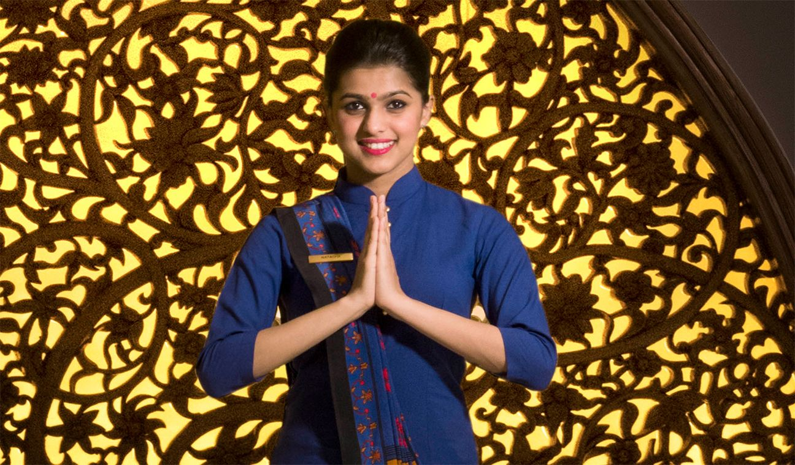

Our Story
Our story wrote its early chapters in 1934 in Shimla where Mr. M.S. Oberoi
pioneered the idea of luxury hospitality in India by
opening his first hotel. The
lessons self-taught, the inevitable mistakes made, the wisdom gained, the
prestigious awards won. All
have formed the compass for successive generations
of Oberois.
To this day, we still practice the most simple and uncommon of operational
philosophies that began with Mr. M.S. Oberoi himself
and now echoed
by his son and current chairman Mr. P.R. S. Oberoi: The guest is everything.
Our joy comes from ensuring each is
seen and valued as a person, a friend,
a family member who has come to stay. It ‘s present in every gesture through
words spoken
or unspoken, in ways that are obvious and in ways that are quietly
respectful of one’s time and privacy.
You will be hard pressed to find properties as beautiful as ours or restaurants,
guest rooms and facilities that are as
exceptional.